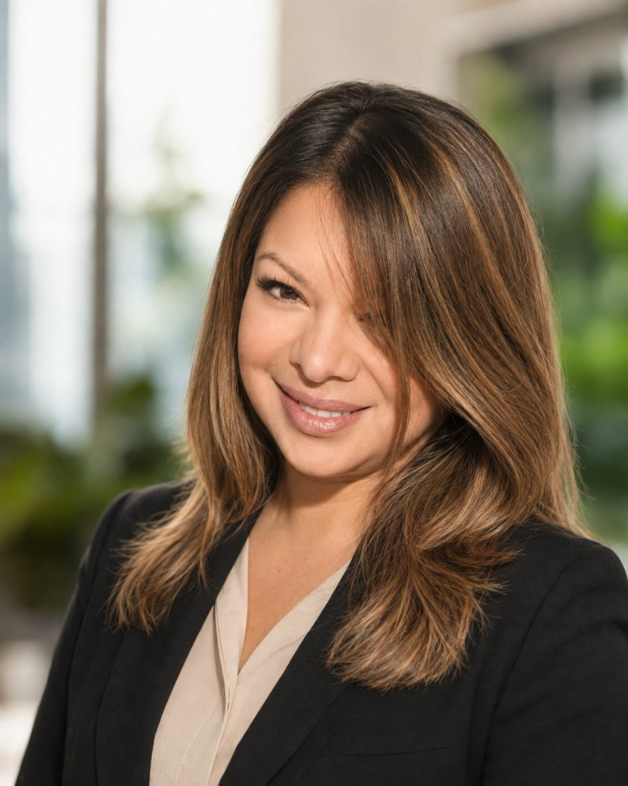

Castro
Head of Process & Quality Assurance en S2 Grupo
Convierto normas y requisitos en decisiones útiles, procesos sostenibles y organizaciones más resilientes.
Lo que hago
-
Gobernanza y GRC
Conecto estrategia, riesgo, cumplimiento y operación para que los controles sirvan a la organización, no al revés.
-
Sistemas de gestión
Diseño, integro y audito sistemas de calidad, seguridad, continuidad, servicios, medioambiente e innovación.
-
Riesgo y resiliencia
Continuidad de negocio y ciberresiliencia con una mirada completa: personas, procesos, tecnología y capacidad de decisión.
-
Procesos y transformación
Procesos, métricas y gobierno de proyectos para que la complejidad se convierta en una forma de trabajar clara y sostenible.
Trayectoria
-
S2 Grupo
Más de siete años construyendo desde cero el sistema de gestión integrado: siete marcos certificados, entre ellos ISO 9001, 27001, 22301 y ENS Alta, prácticamente sin no conformidades. Dirijo un equipo de siete personas.
-
itSMF España
Fui Secretaria General de la asociación de referencia en gestión de servicios TI.
-
Service Management Institute
Soy coautora del SMBoK, el cuerpo de conocimiento de gestión de servicios.
-
Más de 25 años en tecnología
Ingeniera informática. Del desarrollo y la administración de bases de datos a la dirección de calidad, riesgo y procesos.
Credenciales
- Lead Auditor
- ISO 9001, 14001, 20000-1, 22301, 27001, 56001 y ENS categoría Alta
- Proyectos y servicios
- PMP, PRINCE2, ScrumMaster, ITIL y COBIT
- Continuidad
- ISO 22301 Senior
- Tecnología
- Oracle DBA y Developer
- Formación
- CISA, Delegada de Protección de Datos, EC-Council y Lean Operation Manager